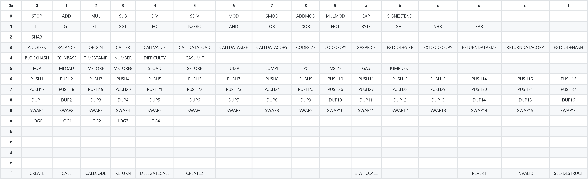
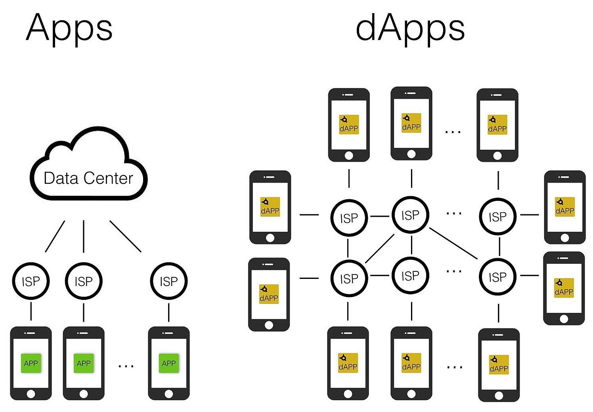

Day28|現實中的區塊鏈(5)：Ethereum的EVM與智能合約
Ethereum
在經過昨天的操作之後，應該也可以發現Bitcoin的使用相對簡單，主要都是圍繞在金流的交易與驗證上，而今天與明天要來解說的Ethereum則著重在智能合約的實作上，但因為篇幅有限，所以主要重點會放置在合約的運行方式與架構上。
圖靈完備性
Ethereum與Bitcoin最大的不同就是具備了圖靈完備性，在提到圖靈完備性之前就必須先提到圖靈機─圖靈機簡單而言可以看作是一個依據幾個簡單、基本的指令來執行工作的機器，理想上的圖靈機具有無限大的儲存空間與運算能力，所有計算上的工作都可以被這台圖靈機解決。如果你有學習過組合語言的話，那麼這些簡單指令集你就可以把它視做組合語言。

圖片來源: 計算機理論的始祖---圖靈機
因此圖靈完備性指的是如果我們可以將所有可計算的問題丟給機器去解決，那麼這台機器就稱為有圖靈完備性。而Ethereum則是具有圖靈完備性的區塊鏈，如果把Ethereum想像成一台電腦，那麼你可以把所有想要解決的問題都丟上Ethereum去執行與求解。
Ethereum Virtual Machine(EVM)
但為了確保區塊鏈上的各個節點能夠對同樣一段程式碼產出同樣的結果，所以Ethereum的程式碼中也內建了可以用來執行指令的Ethereum Virtual Machine(EVM)，這裡的EVM具有圖靈完備性，理論上你可以把任何計算上的問題通通丟給EVM去解決，並且由於區塊鏈不可竄改的特性，在執行結果上也是可靠的，所有人都得依據同樣的邏輯或原則來做事，執行完的結果也會被送入區塊鏈永久儲存。至於EVM裏頭有哪些指令可以使用你可以參考下圖。

圖片來源: Medium
EVM的另一個好處是提供了一個像是沙盒(Sandbox)的環境，意旨所有在沙盒裏頭執行的指令都會像監牢一樣被隔離開來無法影響到外界區塊鏈的運作，這保障了在區塊鏈上執行程式碼時的安全性。
雖然說EVM具備了圖靈完備性，但因為區塊鏈的特性讓世界上所有人共用一個電腦，會導致每個人能夠使用到的運算量十分有限，實務上使用通常不會拿來計算複雜的數學問題，而是僅作基本的四則或邏輯運算。為了控管每個人能夠用的運算量，EVM導入了Gas機制來透過自由經濟的方式來限制使用。
對於EVM的架構有興趣深入探討的話，這裡是一個很好的參考來源。
Ethereum的Gas機制
區塊鏈上的運算資源與空間都是寶貴了，為了避免一般使用者濫用，Ethereum使用Gas機制來限制每個區塊內所能允許的運算量與手續費多寡。Gas的由來就跟名字一樣，與加油雷同，所以等等在舉例上就會以加油站為例。

圖片來源: insuredasap
在講Gas之前我們先來介紹ETH的計量單位：
1 Ether = 1,000,000,000,000,000,000 Wei (10^18)
1 Gwei = 1,000,000,000 Wei (10^9)
在Gas機制下有三個主要名詞：Gas、Gas Price、Gas Limit：
- Gas
Gas相當於汽油幾公升，在EVM的執行過程中每一個指令都需要耗費相對應的Gas，越複雜的邏輯需要花費的Gas也就越多。 - Gas Price
Gas Price意思就是你願意為每個Gas付出多少錢，單位是Gwei。 - Gas Limit
Gas Limit是你願意為這筆交易最多購買多少Gas，會有Gas Limit的限制是因為在智能合約真正被執行前，沒有人會知道執行過程中究竟會耗去多少Gas作為運算用，所以Gas Limit的限制就是為了讓每次執行的智能合約都有手續費的上限。
以台北開車到高雄為例，Gas Price便是你願意為每公升的汽油付出多少費用、Gas Limit就是你願意為這趟旅程最多花幾公升的汽油，因此這一趟旅程的花費(手續費)上限就是。
手續費上限 = Gas Limit * Gas Price
但這只是手續費上限，沒有用到的Gas是可以退還的，所以這趟旅程真正要繳納的手續費是：
手續費 = Gas Used * Gas Price
但如果手續費不足導致旅途(交易)失敗，那麼已花去的手續費是不會退還的，畢竟礦工已經嘗試幫你執行怎可讓人白做工！
至於怎麼樣判別每個步驟的手續費多寡呢？在Ethereum的黃皮書(下圖)裡，其實就有定義了每個步驟所需要耗去的Gas數目，比方說大家最常用的交易所需要耗費的Gas為21000個。

圖片來源: insuredasap
實際上Ethereum規定了每個區塊的Gas上限是800萬Gas，就相當於打包每個區塊的礦工都有800萬Gas可供販售，至於販售給誰就完全根據誰出的Gas Price較高來決定，與Gas Limit毫無關係。就好比每個加油站(新區塊)都有800萬公升(Gas)可供販售，要優先販售給誰就由大家願意出的單價(Gas Price)來決定，所以出的Gas Price越高，你的交易就能夠越快被打包進入區塊。
至於如何決定現在應該要出多少Gas Price?
在ethgasstation中你可以查閱到目前多少的Gas Price可以在多久內被打包:

圖片來源: ethgasstation
比方說這筆交易有點急，你想要在2分鐘內被打包的話，那麼建議你出的Gas Price便是8 Gwei/Gas，至於你實際會支出的手續費多寡以現在約ETH市價約185 USD來計算便是:
手續費 = 21000 Gas * 8 Gwei/Gas * 10^(-9) * 185(USD/ETH) ~ 0.031 USD
上圖的0.031 USD就是這樣被計算出來的！
智能合約(Smart Contract)
智能合約通常指的是之後在EVM裡被執行的程式碼，一個常見智能合約的比喻是自動販賣機：定義了你按下甚麼按鈕、投了多少錢後發生甚麼結果，這些邏輯都可以寫成智能合約後送上Ethereum。另一個例子是資產轉移的智能合約(來源)，我們可以讓智能合約在收到足夠的款項之後自動轉移不動產的產權。

圖片來源: blockgeeks
在智能合約送上Ethereum前都會先被編譯成Bytecode，常見的Bytecode列表你可以在ethervm看到所有的opcode。你也可以嘗試直接使用Bytecode來撰寫智能合約。
至於實際執行智能合約會需要耗費多少Gas? 你可以在這裡查詢到在智能合約編譯成Bytecode後執行每一單一指令所需要耗費的Gas數目，下表是一些簡單指令所需要耗費的Gas數目(來源)，如果智能合約牽涉到的運算越複雜、查詢的資料越多，那麼需要花費的Gas數目也越多。比方說加減指令只需要3 Gas便可以完成，但是查詢Account的餘額需要400 Gas，而開創一個新的Account甚至需要花費32000個Gas！
Operation Gas Description
ADD/SUB 3 Arithmetic operation
MUL/DIV 5 Arithmetic operation
ADDMOD/MULMOD 8 Arithmetic operation
AND/OR/XOR 3 Bitwise logic operation
LT/GT/SLT/SGT/EQ 3 Comparison operation
POP 2 Stack operation
PUSH/DUP/SWAP 3 Stack operation
MLOAD/MSTORE 3 Memory operation
JUMP 8 Unconditional jump
JUMPI 10 Conditional jump
SLOAD 200 Storage operation
SSTORE 5,000/20,000 Storage operation
BALANCE 400 Get balance of an account
CREATE 32,000 Create a new account using CREATE
CALL 25,000 Create a new account using CALL
Decentralized Application(DAPP)
Decentralized Application(DAPP)指的是智能合約與前端集合在一起供使用者使用的APP，相較於一般APP有中心化的Server與營運方負責維護，DAPP的使用與運算通常是由智能合約負責，主要的資料也是從區塊鏈中所取得，也因此日後的使用與營運一般都交由礦工來負責執行，除非有寫特定的後門，否則沒有人可以上去竄改資料或合約執行的結果，使用者一般使用Ethereum的錢包便可以參與互動。

圖片來源: What is a DAPP?
雖然DAPP相較一般APP容易讓人信賴，但區塊鏈本身有令人詬病的兩大缺陷：
- 無法即時交易、每次指令都需要耗去手續費
- UX體驗不良
無法即時交易是因為需要等待礦工打包上鏈後才能確保指令的確進入區塊鏈，但即便是平均出塊時間只有15秒的Ethereum，每次下完指令後平均也要等待1~2分鐘才能夠知道指令的執行結果，並且每次指令都需要花去相對應的ETH，長時間的等待與頻繁地花費是DAPP的致命傷─並不是所有人都有耐心等待也願意花手續費的。也因此側鏈、鏈下交易的技術也在蓬勃發展中，希望能夠解決無法即時交易的致命傷。
另一個是UX體驗不良:在使用DAPP前你必須先擁有區塊鏈的錢包，但目前有接觸並持有錢包的人少之又少，你可以在DappRadar中看到全世界每天超過1000人次使用的DAPP大約只有十來個，對比目前Android、IOS上APP動輒百萬起跳的使用頻率差距非常地大。
今天我們講解完了基本Ethereum的架構與手續費計算，明天我們來體驗一下如何撰寫與使用基本的智能合約！
到目前為止的文章都會放置在Github上。